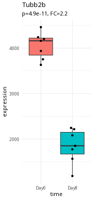
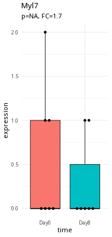
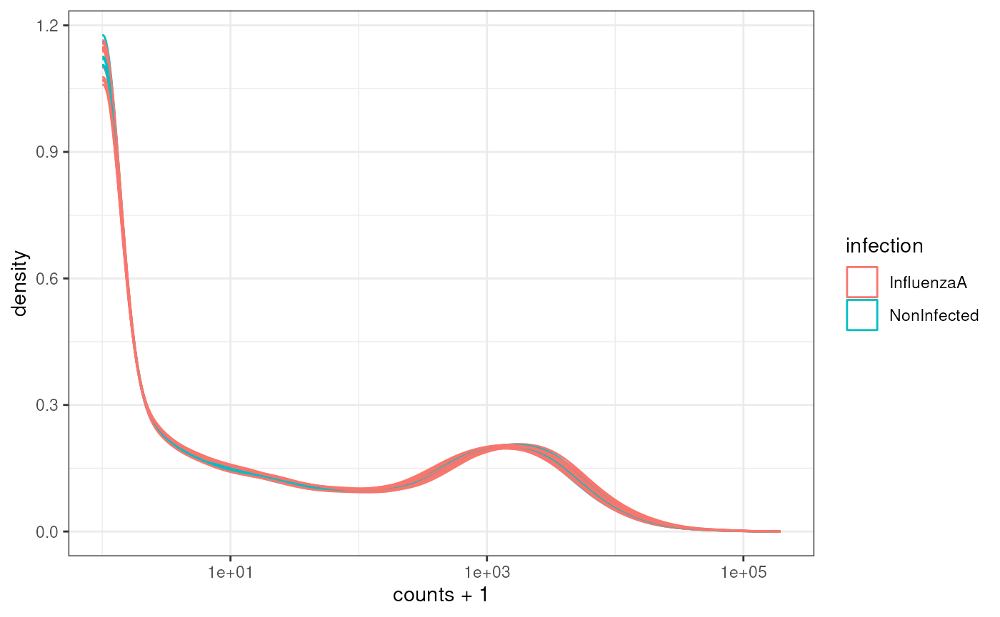
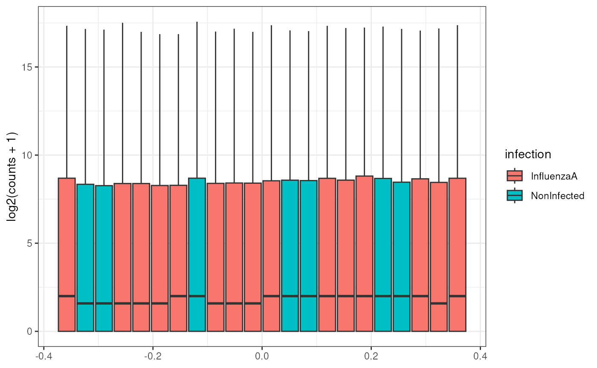

Learning Objectives
- Explain the Bioconductor Project
- Explain the basic structure of Bioconductor S4 objects
-
Explain and Utilize
SummarizedExperimentobjects using thetidySummarizedExperimentpackage
What is Bioconductor?
- An open-source software project since 2001 for ’omics analyses
- A repository of curated, inter-operable R packages
- A community of developers and users
- Support site
- Zulip chat
- YouTube channel
- Annual conferences in North America, Europe and Asia
- Working groups
Data in bioinformatics is often complex and doesn’t fit into a single
data frame.
To deal with this, developers define specialized data containers (termed
classes) that match the properties of the data they need to
handle.
This aspect is central to the Bioconductor1 project which uses the same core data infrastructure across packages. This certainly contributed to Bioconductor’s success. Bioconductor package developers are advised to make use of existing infrastructure to provide coherence, interoperability, and stability to the project as a whole.
S4 Bioconductor Objects
At the heart of Bioconductor are the S4 Objects. You can think of these data structures as ways to package together:
- Assay Data, such as an RNAseq count matrix
- Metadata (data about the experiment), including Experimental Design
Part of why Bioconductor works is this data packaging. We can write
functions to act on the data in these S4 Objects as part of a processing
workflow. As long as we output a Bioconductor S4 object, our
routines can work as part of a pipeline. These routines are called
methods(), and may come from a variety of packages.
What is a method?
You may have heard of functions and methods - what is the difference?
A working definition of a method is that it is a function that works
on a particular object type, such as the
SummarizedExperiment type we’re going to investigate in a
little bit.
Method is a little bit more specific than a function.
You can think of the Bioconductor S4 objects as taking the place of
data.frames in dplyr pipelines - they are the
common format that all of the Bioconductor methods work on. They allow
Bioconductor methods to be interoperable - we can mix and match methods
from various packages to customize our analysis.
Case Study: RNAseq Experiments
Bulk RNAseq experiments are meant to distinguish expression differences between samples or groups of samples.
Please see the concepts section for more in depth details of the processing of RNA-seq experiments.
Here is an example of a large expression difference (Tubb2a).

Here is an example of a questionable expression difference (myl7).

Take a second and think about what makes Tubb2a a better candidate than myl7.
What are we trying to accomplish?
In RNAseq, we are interested in assessing expression differences between samples at either the gene or transcript level. The starting data for this is typically a matrix of counts for thousands of genes and many samples.
In order to do see if there are expression differences, we need phenotype information about the samples in our experiment. Specifically, we need to have information about:
- conditions (infection, time)
- possible confounders (gender)
Experimental Design of RNAseq Experiments
When we design our RNAseq experiment, we want to be able to:
- Number and type of replicates
- Avoiding confounding
- Addressing batch effects
The important thing to note is that if you’re unsure about the experimental design, contact your Bioinformatics Core. They can help you design the experiment based on what samples you have.
Please see the experimental design section for more in depth details.
SummarizedExperiment
One of the most used Bioconductor S4 objects is the
SummarizedExperiment, which was developed to hold any kind
of data from features (e.g., genes, proteins, metabolites) measured
across many samples, and also metadata about the features and samples.
The following diagram shows how the different data slots in the
SummarizedExperiment relate to each other.

We’ll take a look at data in a SummarizedExperiment
object:
library(SummarizedExperiment)
SE <- readRDS(system.file("extdata/GSE96870_se.rds", package="bioc2026Intro"))
SE## class: RangedSummarizedExperiment
## dim: 41786 22
## metadata(0):
## assays(1): counts
## rownames(41786): Xkr4 LOC105243853 ... TrnT TrnP
## rowData names(3): ENTREZID product gbkey
## colnames(22): GSM2545337 GSM2545338 ... GSM2545346 GSM2545347
## colData names(12): title geo_accession ... Label GroupValidation
The other big part of S4 objects is validation. This can be a bit hard to wrap your head around.
The Bioconductor designers put special validation checks on the input data for the Bioconductor objects when you load data into them.
The following is what is called the Constructor for the
SummarizedExperiment object. This is what we use to make a
brand new SummarizedExperiment object from its pieces.
SummarizedExperiment(assays=SimpleList(),
rowData=NULL, rowRanges=NULL,
colData=DataFrame(),
metadata=list(),
checkDimnames=TRUE)Each argument to the SummarizedExperiment constructor
defines restrictions on that slot. For example, there is a slot called
assays.
The checkDimnames argument is critical. In order to do
any work with an experiment you need to map samples to
colNames (the experimental matrix). For example, to
calculate differential expression between samples, you need to specify
the different groups to compare and which samples map to which groups.
Thus, the column names in the AssayData must be identical to the row
names in colData.
If it isn’t in colData, it doesn’t exist
Keep in mind that your colData must be as complete as
possible. Why? The short answer is that if there isn’t a row for your
sample in colData, then it basically doesn’t exist for
Bioconductor methods.
So make sure your colData contains sample names for all
your samples.
In some ways, the SummarizedExperiment object is like a
data.frame, but with extra metadata. For example, our
object has column names, which correspond to sample identifiers:
colnames(SE)## [1] "GSM2545337" "GSM2545338" "GSM2545348" "GSM2545353" "GSM2545343"
## [6] "GSM2545349" "GSM2545354" "GSM2545339" "GSM2545344" "GSM2545352"
## [11] "GSM2545362" "GSM2545340" "GSM2545345" "GSM2545350" "GSM2545363"
## [16] "GSM2545336" "GSM2545342" "GSM2545351" "GSM2545380" "GSM2545341"
## [21] "GSM2545346" "GSM2545347"And row names:
rownames(SE)[1:30]## [1] "Xkr4" "LOC105243853" "LOC105242387" "LOC105242467"
## [5] "Rp1" "Sox17" "Gm7357" "LOC105243855"
## [9] "LOC105243854" "Gm7369" "Gm29874" "Gm6123"
## [13] "Mrpl15" "Lypla1" "LOC105243856" "Tcea1"
## [17] "Gm6104" "Rgs20" "Gm16041" "Atp6v1h"
## [21] "Oprk1" "Npbwr1" "4732440D04Rik" "Rb1cc1"
## [25] "Fam150a" "Gm2147" "LOC102631893" "St18"
## [29] "LOC102641523" "Pcmtd1"So far, so good.
Assay Data
Everything in SummarizedExperiment is built around the
Assay data that we store in it.
Each element of the Assay data list contains a matrix
with the following contents:
- Rows: correspond to Gene Locus or possibly Transcripts
- Columns: correspond to the samples used in your experiment.
- Values: correspond to the actual data. In the case of RNAseq, these are the counts that map to each row.
You can extract the assay data using the assay()
method:
## GSM2545337 GSM2545338 GSM2545348 GSM2545353 GSM2545343 GSM2545349
## Xkr4 2410 2159 2275 1910 2235 1881
## LOC105243853 0 1 1 0 3 0
## LOC105242387 121 110 161 214 130 154
## LOC105242467 5 5 2 1 2 4
## Rp1 2 0 3 1 1 6
## Sox17 239 218 302 322 296 286
## GSM2545354 GSM2545339 GSM2545344 GSM2545352 GSM2545362 GSM2545340
## Xkr4 1771 1980 1779 1890 2315 1977
## LOC105243853 0 4 3 1 1 0
## LOC105242387 124 120 131 272 189 172
## LOC105242467 4 5 2 3 2 2
## Rp1 3 3 1 5 3 2
## Sox17 273 220 233 267 197 261
## GSM2545345 GSM2545350 GSM2545363 GSM2545336 GSM2545342 GSM2545351
## Xkr4 1528 2584 1645 1891 1757 1837
## LOC105243853 0 0 0 0 1 1
## LOC105242387 160 124 223 204 177 221
## LOC105242467 2 7 1 12 3 1
## Rp1 2 5 1 2 3 3
## Sox17 271 325 310 251 179 201
## GSM2545380 GSM2545341 GSM2545346 GSM2545347
## Xkr4 1723 1945 1644 1585
## LOC105243853 1 0 1 3
## LOC105242387 251 173 180 176
## LOC105242467 4 6 1 2
## Rp1 0 1 2 2
## Sox17 246 232 205 230Assays Are Not just for RNAseq data
Assay Data is very flexible. For example, there are flow cytometry
objects where the rows correspond to cell surface markers, and columns
that correspond to each cell. Similarly,
SingleCellExperiment objects (which are derived from
SummarizedExperiment) have rows that correspond to Genes
and columns that correspond to individual cells.
Think about it
Are the colnames of our object identical to the colnames of the assay object? Try it out:
colnames(SE)## [1] "GSM2545337" "GSM2545338" "GSM2545348" "GSM2545353" "GSM2545343"
## [6] "GSM2545349" "GSM2545354" "GSM2545339" "GSM2545344" "GSM2545352"
## [11] "GSM2545362" "GSM2545340" "GSM2545345" "GSM2545350" "GSM2545363"
## [16] "GSM2545336" "GSM2545342" "GSM2545351" "GSM2545380" "GSM2545341"
## [21] "GSM2545346" "GSM2545347"## [1] "GSM2545337" "GSM2545338" "GSM2545348" "GSM2545353" "GSM2545343"
## [6] "GSM2545349" "GSM2545354" "GSM2545339" "GSM2545344" "GSM2545352"
## [11] "GSM2545362" "GSM2545340" "GSM2545345" "GSM2545350" "GSM2545363"
## [16] "GSM2545336" "GSM2545342" "GSM2545351" "GSM2545380" "GSM2545341"
## [21] "GSM2545346" "GSM2545347"Metadata
Metadata is information about the experiment that is not part of the Assay Data.
The most important part of the metadata is the colData
slot. This slot contains information about the samples (the columns) of
the assay. This is where we store the Experimental Design that we talked
about.
colData(SE)## DataFrame with 22 rows and 12 columns
## title geo_accession organism age sex
## <character> <character> <character> <character> <character>
## GSM2545337 CNS_RNA-seq_11C GSM2545337 Mus musculus 8 weeks Female
## GSM2545338 CNS_RNA-seq_12C GSM2545338 Mus musculus 8 weeks Female
## GSM2545348 CNS_RNA-seq_27C GSM2545348 Mus musculus 8 weeks Female
## GSM2545353 CNS_RNA-seq_3C GSM2545353 Mus musculus 8 weeks Female
## GSM2545343 CNS_RNA-seq_20C GSM2545343 Mus musculus 8 weeks Male
## ... ... ... ... ... ...
## GSM2545351 CNS_RNA-seq_2C GSM2545351 Mus musculus 8 weeks Female
## GSM2545380 CNS_RNA-seq_9C GSM2545380 Mus musculus 8 weeks Female
## GSM2545341 CNS_RNA-seq_17C GSM2545341 Mus musculus 8 weeks Male
## GSM2545346 CNS_RNA-seq_25C GSM2545346 Mus musculus 8 weeks Male
## GSM2545347 CNS_RNA-seq_26C GSM2545347 Mus musculus 8 weeks Male
## infection strain time tissue mouse
## <character> <character> <character> <character> <integer>
## GSM2545337 NonInfected C57BL/6 Day0 Cerebellum 9
## GSM2545338 NonInfected C57BL/6 Day0 Cerebellum 10
## GSM2545348 NonInfected C57BL/6 Day0 Cerebellum 8
## GSM2545353 NonInfected C57BL/6 Day0 Cerebellum 4
## GSM2545343 NonInfected C57BL/6 Day0 Cerebellum 11
## ... ... ... ... ... ...
## GSM2545351 InfluenzaA C57BL/6 Day8 Cerebellum 16
## GSM2545380 InfluenzaA C57BL/6 Day8 Cerebellum 19
## GSM2545341 InfluenzaA C57BL/6 Day8 Cerebellum 6
## GSM2545346 InfluenzaA C57BL/6 Day8 Cerebellum 23
## GSM2545347 InfluenzaA C57BL/6 Day8 Cerebellum 24
## Label Group
## <factor> <factor>
## GSM2545337 Female_Day0_9 Female_Day0
## GSM2545338 Female_Day0_10 Female_Day0
## GSM2545348 Female_Day0_8 Female_Day0
## GSM2545353 Female_Day0_4 Female_Day0
## GSM2545343 Male_Day0_11 Male_Day0
## ... ... ...
## GSM2545351 Female_Day8_16 Female_Day8
## GSM2545380 Female_Day8_19 Female_Day8
## GSM2545341 Male_Day8_6 Male_Day8
## GSM2545346 Male_Day8_23 Male_Day8
## GSM2545347 Male_Day8_24 Male_Day8In our experimental design, we have males and females, timepoints, and different kinds of tissues.
Think about it
What do the rownames() of colData(SE)
correspond to?
## [1] "GSM2545337" "GSM2545338" "GSM2545348" "GSM2545353" "GSM2545343"
## [6] "GSM2545349" "GSM2545354" "GSM2545339" "GSM2545344" "GSM2545352"
## [11] "GSM2545362" "GSM2545340" "GSM2545345" "GSM2545350" "GSM2545363"
## [16] "GSM2545336" "GSM2545342" "GSM2545351" "GSM2545380" "GSM2545341"
## [21] "GSM2545346" "GSM2545347"Keep your SummarizedExperiment whole
It might be tempting to extract the assay data and the metadata and work with them separately. But as we’ll see in the following section, these two slots work together and enable all sorts of analysis.
Subsetting SummarizedExperiment
We saw that we have the checkNames constraint. This is
because we can use the colData and the
assayData in our object to do subsetting using the
metadata.
female <- SE[,SE$sex == "Female"]
female## class: RangedSummarizedExperiment
## dim: 41786 12
## metadata(0):
## assays(1): counts
## rownames(41786): Xkr4 LOC105243853 ... TrnT TrnP
## rowData names(3): ENTREZID product gbkey
## colnames(12): GSM2545337 GSM2545338 ... GSM2545351 GSM2545380
## colData names(12): title geo_accession ... Label Group
colData(female)## DataFrame with 12 rows and 12 columns
## title geo_accession organism age sex
## <character> <character> <character> <character> <character>
## GSM2545337 CNS_RNA-seq_11C GSM2545337 Mus musculus 8 weeks Female
## GSM2545338 CNS_RNA-seq_12C GSM2545338 Mus musculus 8 weeks Female
## GSM2545348 CNS_RNA-seq_27C GSM2545348 Mus musculus 8 weeks Female
## GSM2545353 CNS_RNA-seq_3C GSM2545353 Mus musculus 8 weeks Female
## GSM2545339 CNS_RNA-seq_13C GSM2545339 Mus musculus 8 weeks Female
## ... ... ... ... ... ...
## GSM2545362 CNS_RNA-seq_5C GSM2545362 Mus musculus 8 weeks Female
## GSM2545336 CNS_RNA-seq_10C GSM2545336 Mus musculus 8 weeks Female
## GSM2545342 CNS_RNA-seq_1C GSM2545342 Mus musculus 8 weeks Female
## GSM2545351 CNS_RNA-seq_2C GSM2545351 Mus musculus 8 weeks Female
## GSM2545380 CNS_RNA-seq_9C GSM2545380 Mus musculus 8 weeks Female
## infection strain time tissue mouse
## <character> <character> <character> <character> <integer>
## GSM2545337 NonInfected C57BL/6 Day0 Cerebellum 9
## GSM2545338 NonInfected C57BL/6 Day0 Cerebellum 10
## GSM2545348 NonInfected C57BL/6 Day0 Cerebellum 8
## GSM2545353 NonInfected C57BL/6 Day0 Cerebellum 4
## GSM2545339 InfluenzaA C57BL/6 Day4 Cerebellum 15
## ... ... ... ... ... ...
## GSM2545362 InfluenzaA C57BL/6 Day4 Cerebellum 20
## GSM2545336 InfluenzaA C57BL/6 Day8 Cerebellum 14
## GSM2545342 InfluenzaA C57BL/6 Day8 Cerebellum 5
## GSM2545351 InfluenzaA C57BL/6 Day8 Cerebellum 16
## GSM2545380 InfluenzaA C57BL/6 Day8 Cerebellum 19
## Label Group
## <factor> <factor>
## GSM2545337 Female_Day0_9 Female_Day0
## GSM2545338 Female_Day0_10 Female_Day0
## GSM2545348 Female_Day0_8 Female_Day0
## GSM2545353 Female_Day0_4 Female_Day0
## GSM2545339 Female_Day4_15 Female_Day4
## ... ... ...
## GSM2545362 Female_Day4_20 Female_Day4
## GSM2545336 Female_Day8_14 Female_Day8
## GSM2545342 Female_Day8_5 Female_Day8
## GSM2545351 Female_Day8_16 Female_Day8
## GSM2545380 Female_Day8_19 Female_Day8This tight interaction of metadata and assay data is critical when we start doing differential analysis. The experimental design will help determine whether we can make the comparisons we want to make and the conclusions we can draw from the dataset.
Remember the Comma
Remember that the , (comma) is used to distinguish
between rows and columns. Rows correspond to genes and columns
correpsond to samples.
In the above example, we are subsetting the samples, so our criteria goes after the comma.
For manipulating the SummarizedExperiment object, we
will use the tidySummarizedExperiment package to subset it
- essentially this package lets us use dplyr on the
SummarizedExperiment and DESeqDataset
objects.
rowData: Additional Annotations
rowData(SE)## DataFrame with 41786 rows and 3 columns
## ENTREZID product gbkey
## <character> <character> <character>
## Xkr4 497097 X Kell blood group p.. mRNA
## LOC105243853 105243853 uncharacterized LOC1.. ncRNA
## LOC105242387 105242387 uncharacterized LOC1.. ncRNA
## LOC105242467 105242467 lipoxygenase homolog.. mRNA
## Rp1 19888 retinitis pigmentosa.. mRNA
## ... ... ... ...
## TrnS2 17743 tRNA-Ser tRNA
## TrnL2 17736 tRNA-Leu tRNA
## TrnE 17729 tRNA-Glu tRNA
## TrnT 17744 tRNA-Thr tRNA
## TrnP 17739 tRNA-Pro tRNArowRanges: Genomic Information
The SummarizedExperiment we are working with is actually
a variant: a RangedSummarizedExperiment. It contains an
additional slot called rowRanges. The
rowRanges slot of a SummarizedExperiment can
contain genomic information, such as genomic coordinates. Let’s take a
look:
rowRanges(SE)## GRanges object with 41786 ranges and 3 metadata columns:
## seqnames ranges strand | ENTREZID
## <Rle> <IRanges> <Rle> | <character>
## Xkr4 1 3670552-3671742 - | 497097
## LOC105243853 1 3357323-3366505 + | 105243853
## LOC105242387 1 3658847-3670456 - | 105242387
## LOC105242467 1 4233436-4233728 - | 105242467
## Rp1 1 4409170-4409241 - | 19888
## ... ... ... ... . ...
## TrnS2 MT 11613-11671 + | 17743
## TrnL2 MT 11671-11741 + | 17736
## TrnE MT 14071-14139 - | 17729
## TrnT MT 15289-15355 + | 17744
## TrnP MT 15356-15422 - | 17739
## product gbkey
## <character> <character>
## Xkr4 X Kell blood group p.. mRNA
## LOC105243853 uncharacterized LOC1.. ncRNA
## LOC105242387 uncharacterized LOC1.. ncRNA
## LOC105242467 lipoxygenase homolog.. mRNA
## Rp1 retinitis pigmentosa.. mRNA
## ... ... ...
## TrnS2 tRNA-Ser tRNA
## TrnL2 tRNA-Leu tRNA
## TrnE tRNA-Glu tRNA
## TrnT tRNA-Thr tRNA
## TrnP tRNA-Pro tRNA
## -------
## seqinfo: 90 sequences from an unspecified genome; no seqlengthsThe seqnames column corresponds to the chromosome,
ranges is what is called an IRanges object,
which specifies an interval defined by a start and end coordinate, and a
strand.
Filtering by Genomic Ranges
The SummarizedExperiment we are working with is actually
a variant: a RangedSummarizedExperiment. This allows you to
subset the rows by genomic intervals.
Our main technique for subsetting by i is
subsetByOverlaps(). We’ll need to define a Genomic Region
of Interest (ROI), and then we can subset our SE object
with that ROI.
Our ROI is defined by a GRanges object, which can
specify a range of genomic coordinates. Remember that the
seqnames column corresponds to chromosome, and the
ranges column needs to be defined as an
IRanges() object, with a start and
end.
roi <- GRanges(seqnames = "1", ranges=IRanges(start = 1, end = 5000000))
subset_SE <- subsetByOverlaps(SE, roi)
subset_SE## class: RangedSummarizedExperiment
## dim: 19 22
## metadata(0):
## assays(1): counts
## rownames(19): Xkr4 LOC105243853 ... Rgs20 Gm16041
## rowData names(3): ENTREZID product gbkey
## colnames(22): GSM2545337 GSM2545338 ... GSM2545346 GSM2545347
## colData names(12): title geo_accession ... Label GroupYou can see we hve 19 rows left in subset_SE that map to
our Genomic Range of interest.
If you have more than 1 region of interest, you can combine multiple
sets of ranges into your GRanges object for subsetting.
A Common Bioconductor Pattern
Depending on the package, we will tend to overwrite objects as we run methods on them, such as the following.
In DESeq2, each method will add something to the object
(usually extra columns or a results table).
Here’s an example:
library(SummarizedExperiment)
library(DESeq2)
DSE <- DESeqDataSet(SE, design = ~ sex + time) #make DESeqDataset
DSE <- DSE[rowSums(assay(DSE)) > 5,] #filter out low expressing candidates
DSE <- DESeq(DSE) #run estimateSizeFactors, estimateDispersions, nbinomialWaldTest
tidySummarizedExperiment
The SummarizedExperiment object does not act like the
normal data.frame/tibble we expect, especially
in filtering and subsetting.
The tidySummarizedExperiment package will be helpful for
us to understand and visualize the SummarizedExperiment
package. Once we do that, our SummarizedExperiment object
will act more like a data.frame.
Basically, tidySummarizedExperiment treats the data as a
long data frame that combines both the assay and metadata. This format
is helpful in doing more work with the tidyverse:
## Loading required package: ttservice## tidySummarizedExperiment says: Printing is now handled externally. If you want to visualize the data in a tidy way, do library(tidyprint). See https://github.com/tidyomics/tidyprint for more information.##
## Attaching package: 'tidySummarizedExperiment'## The following object is masked from 'package:generics':
##
## tidy
SE## class: RangedSummarizedExperiment
## dim: 41786 22
## metadata(0):
## assays(1): counts
## rownames(41786): Xkr4 LOC105243853 ... TrnT TrnP
## rowData names(3): ENTREZID product gbkey
## colnames(22): GSM2545337 GSM2545338 ... GSM2545346 GSM2545347
## colData names(12): title geo_accession ... Label GroupFiltering Data
We can use dplyr to filter the data using the
tidySummarizedExperiment package:
SE |>
filter(sex == "Female")## class: RangedSummarizedExperiment
## dim: 41786 12
## metadata(1): latest_filter_scope_report
## assays(1): counts
## rownames(41786): Xkr4 LOC105243853 ... TrnT TrnP
## rowData names(3): ENTREZID product gbkey
## colnames(12): GSM2545337 GSM2545338 ... GSM2545351 GSM2545380
## colData names(12): title geo_accession ... Label GroupGetting Counts across the experiment
We can produce summaries of the counts of each sample library:
## tidySummarizedExperiment says: A data frame is returned for independent data analysis.## Warning: `when()` was deprecated in purrr 1.0.0.
## ℹ Please use `if` instead.
## ℹ The deprecated feature was likely used in the tidySummarizedExperiment
## package.
## Please report the issue at
## <https://github.com/stemangiola/tidySummarizedExperiment/issues>.
## This warning is displayed once per session.
## Call `lifecycle::last_lifecycle_warnings()` to see where this warning was
## generated.## # A tibble: 22 × 2
## .sample total_counts
## <chr> <int>
## 1 GSM2545336 40265225
## 2 GSM2545337 33818586
## 3 GSM2545338 31684299
## 4 GSM2545339 32663438
## 5 GSM2545340 33518799
## 6 GSM2545341 32777049
## 7 GSM2545342 31624027
## 8 GSM2545343 40031023
## 9 GSM2545344 33726110
## 10 GSM2545345 34043596
## # ℹ 12 more rowsTry it out
Try summarizing the total_counts by sex or
by infection:
## tidySummarizedExperiment says: A data frame is returned for independent data analysis.## # A tibble: 2 × 2
## sex total_counts
## <chr> <int>
## 1 Female 440881903
## 2 Male 362166871Plotting
We can look at the distribution of counts across samples by using
.sample as our grouping variable in
ggplot().
SE |>
ggplot(aes(counts + 1, group=.sample, color=infection)) +
geom_density() +
scale_x_log10() +
theme_bw()
Our data (individual gene counts) is highly skewed. If we log-transform the data, then the skew is lessened. The boxplots of log counts are helpful for detecting batch effects.
SE |>
ggplot(aes(y=log2(counts + 1), group=.sample, fill=infection)) +
geom_boxplot() +
theme_bw()
Take a look at the above box plot. Are there differences in distribution between samples?
In order to compare expression levels between samples, we will need to adjust, or normalize by library size. We’ll investigate this further when we get to differential expression.
Try it Out
Try mapping another variable to fill.
SE |>
ggplot(aes(y=log2(counts + 1), group=.sample, fill=sex)) +
geom_boxplot() +
theme_bw()Take Home Messages
- We package multiple parts of the data (assay data and metadata) into
a
SummarizedExperimentobject:- Columns correspond to samples, Rows correspond to gene locus or transcripts
-
Column names of the assay data must match a column in the
colData -
Experimental Design variables are part of the
colData - Rownames of the assay data must match the rowNames in the column data
- The
SummarizedExperimentobject lets us subset by phenotype variables -
tidySummarizedExperimentlets us interact with theSummarizedExperimentobject as if it were a long data frame with both metadata and assay data together.- We can plot and subset the
SummarizedExperimentobject using our regulartidyversetools (ggplot2,dplyr, etc.) once we load thetidySummarizedExperimentpackage.
- We can plot and subset the
The Bioconductor project was initiated by Robert Gentleman, one of the two creators of the R language. Bioconductor provides tools dedicated to omics data analysis. Bioconductor uses the R statistical programming language and is open source and open development.↩︎